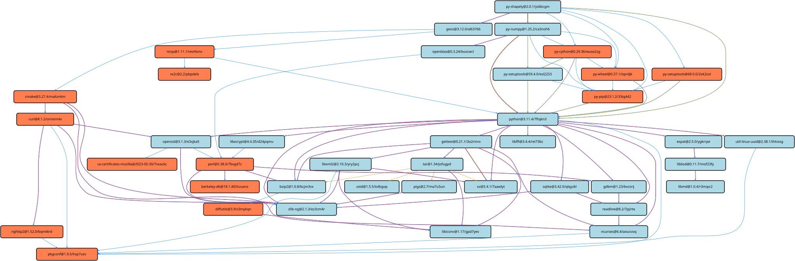
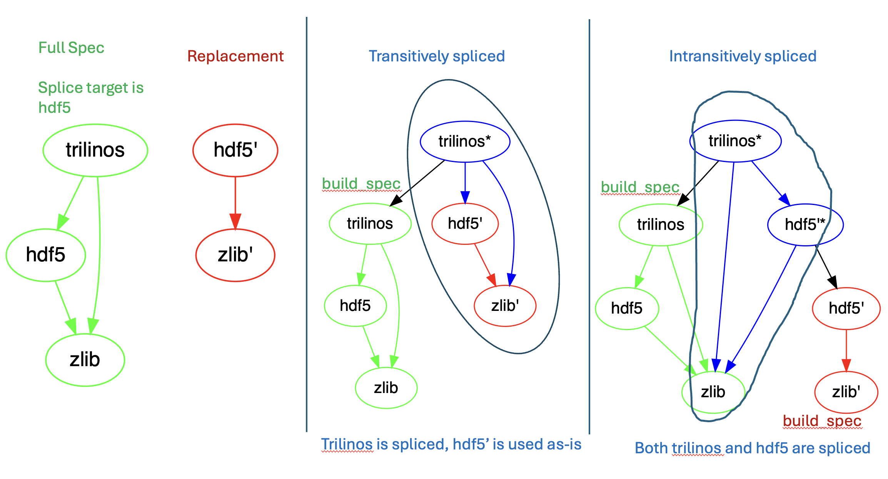

Concretization Settings (concretizer.yaml)¶
The concretizer.yaml configuration file allows users to customize aspects of the algorithm used to select the dependencies they install.
The default configuration is the following:
# -------------------------------------------------------------------------
# This is the default spack configuration file.
#
# Settings here are versioned with Spack and are intended to provide
# sensible defaults out of the box. Spack maintainers should edit this
# file to keep it current.
#
# Users can override these settings by editing
# `$SPACK_ROOT/etc/spack/concretizer.yaml`, `~/.spack/concretizer.yaml`,
# or by adding a `concretizer:` section to an environment.
# -------------------------------------------------------------------------
concretizer:
# Whether to consider installed packages or packages from buildcaches when
# concretizing specs. If `true`, we'll try to use as many installs/binaries
# as possible, rather than building. If `false`, we'll always give you a fresh
# concretization. If `dependencies`, we'll only reuse dependencies but
# give you a fresh concretization for your root specs.
reuse: true
# Options that tune which targets are considered for concretization. The
# concretization process is very sensitive to the number targets, and the time
# needed to reach a solution increases noticeably with the number of targets
# considered.
targets:
# Determine whether we want to target specific or generic
# microarchitectures. Valid values are: "microarchitectures" or "generic".
# An example of "microarchitectures" would be "skylake" or "bulldozer",
# while an example of "generic" would be "aarch64" or "x86_64_v4".
granularity: microarchitectures
# If "false" allow targets that are incompatible with the current host (for
# instance concretize with target "icelake" while running on "haswell").
# If "true" only allow targets that are compatible with the host.
host_compatible: true
# When "true" concretize root specs of environments together, so that each unique
# package in an environment corresponds to one concrete spec. This ensures
# environments can always be activated. When "false" perform concretization separately
# on each root spec, allowing different versions and variants of the same package in
# an environment.
unify: true
# Option to deal with possible duplicate nodes (i.e. different nodes from the same package) in the DAG.
duplicates:
# "none": allows a single node for any package in the DAG.
# "minimal": allows the duplication of 'build-tools' nodes only
# (e.g. py-setuptools, cmake etc.)
# "full" (experimental): allows separation of the entire build-tool stack (e.g. the entire "cmake" subDAG)
strategy: minimal
# Maximum number of duplicates in a DAG, when using a strategy that allows duplicates. "default" is the
# number used if there isn't a more specific alternative
max_dupes:
default: 1
# Virtuals
c: 2
cxx: 2
fortran: 1
# Regular packages
cmake: 2
gmake: 2
python: 2
python-venv: 2
py-cython: 2
py-flit-core: 2
py-pip: 2
py-setuptools: 2
py-versioneer: 2
py-wheel: 2
xcb-proto: 2
# Compilers
gcc: 2
llvm: 2
# Option to specify compatibility between operating systems for reuse of compilers and packages
# Specified as a key: [list] where the key is the os that is being targeted, and the list contains the OS's
# it can reuse. Note this is a directional compatibility so mutual compatibility between two OS's
# requires two entries i.e. os_compatible: {sonoma: [monterey], monterey: [sonoma]}
os_compatible: {}
# If false, force all link/run dependencies of root to match c/c++/Fortran compiler. If this is
# a list, then the listed packages are allowed to use a different compiler, but all others must
# match.
compiler_mixing: true
# Option to specify whether to support splicing. Splicing allows for
# the relinking of concrete package dependencies in order to better
# reuse already built packages with ABI compatible dependencies
splice:
explicit: []
automatic: false
# Maximum time, in seconds, allowed for the 'solve' phase. If set to 0, there is no time limit.
timeout: 0
# If set to true, exceeding the timeout will always result in a concretization error. If false,
# the best (suboptimal) model computed before the timeout is used.
#
# Setting this to false yields unreproducible results, so we advise to use that value only
# for debugging purposes (e.g. check which constraints can help Spack concretize faster).
error_on_timeout: true
# Static analysis may reduce the concretization time by generating smaller ASP problems, in
# cases where there are requirements that prevent part of the search space to be explored.
static_analysis: false
# If enabled, concretizations are cached in the misc_cache. The cache is keyed by the hash
# of solver inputs, so we only need to run setup (not solve) if there is a cache hit.
# Feature is experimental: enabling may result in potentially invalid concretizations
# if package recipes are changed, see: https://github.com/spack/spack/issues/51553
concretization_cache:
enable: false
# Options to control the behavior of the concretizer with external specs
externals:
# Either 'architecture_only', to complete external specs with just the architecture of the
# current host, or 'default_variants' to complete external specs also with missing variants,
# using their default value.
completion: default_variants
Completion of external nodes¶
The external packages available from the packages.yaml configuration file are usually reporting only a few of the variants defined in the corresponding recipe.
Users can configure how Spack deals with missing information for externals via the concretizer:externals:completion attribute:
concretizer:
externals:
completion: default_variants
This attribute currently allows two possible values:
architecture_only: only the mandatory architectural information is completed on externalsdefault_variants: external specs are also completed with missing variants, using their default values
Reuse Already Installed Packages¶
The reuse attribute controls how aggressively Spack reuses binary packages during concretization.
The attribute can be either a single value or an object for more complex configurations.
In the former case (“single value”), it allows Spack to:
Reuse installed packages and build caches for all the specs to be concretized, when
true.Reuse installed packages and build caches only for the dependencies of the root specs, when
dependencies.Disregard reusing installed packages and build caches, when
false.
In case finer control over which specs are reused is needed, the value of this attribute can be an object with the following keys:
roots: iftrueroot specs are reused, iffalseonly dependencies of root specs are reusedfrom: list of sources from which reused specs are taken
Each source in from is itself an object with the following attributes:
Attribute name |
Description |
|---|---|
type (mandatory, string) |
Can be |
include (optional, list of specs) |
If present, reusable specs must match at least one of the constraints in the list. |
exclude (optional, list of specs) |
If present, reusable specs must not match any of the constraints in the list. |
For instance, the following configuration:
concretizer:
reuse:
roots: true
from:
- type: local
include:
- "%gcc"
- "%clang"
tells the concretizer to reuse all specs compiled with either gcc or clang that are installed in the local store.
Any spec from remote build caches is disregarded.
To reduce the boilerplate in configuration files, default values for the include and exclude options can be pushed up one level:
concretizer:
reuse:
roots: true
include:
- "%gcc"
from:
- type: local
- type: buildcache
- type: local
include:
- "foo %oneapi"
In the example above, we reuse all specs compiled with gcc from the local store and remote build caches, and we also reuse foo %oneapi.
Note that the last source of specs overrides the default include attribute.
For one-off concretizations, there are command-line arguments for each of the simple “single value” configurations. This means a user can:
% spack install --reuse <spec>
to enable reuse for a single installation, or:
$ spack install --fresh <spec>
to do a fresh install if reuse is enabled by default.
See also
Selection of Target Microarchitectures¶
The options under the targets attribute control which targets are considered during a solve.
Currently, the options in this section are only configurable from the concretizer.yaml file, and there are no corresponding command-line arguments to enable them for a single solve.
The granularity option can take two possible values: microarchitectures and generic.
If set to:
concretizer:
targets:
granularity: microarchitectures
Spack will consider all the microarchitectures known to archspec to label nodes for compatibility.
If instead the option is set to:
concretizer:
targets:
granularity: generic
Spack will consider only generic microarchitectures.
For instance, when running on a Haswell machine, Spack will consider haswell as the best target in the former case and x86_64_v3 as the best target in the latter case.
The host_compatible option is a Boolean option that determines whether or not the microarchitectures considered during the solve are constrained to be compatible with the host Spack is currently running on.
For instance, if this option is set to true, a user cannot concretize for target=icelake while running on a Haswell machine.
Duplicate Nodes¶
The duplicates attribute controls whether the DAG can contain multiple configurations of the same package.
This is mainly relevant for build dependencies, which may have their version pinned by some nodes and thus be required at different versions by different nodes in the same DAG.
The strategy option controls how the solver deals with duplicates.
If the value is none, then a single configuration per package is allowed in the DAG.
This means, for instance, that only a single cmake or a single py-setuptools version is allowed.
The result would be a slightly faster concretization at the expense of making a few specs unsolvable.
If the value is minimal, Spack will allow packages tagged as build-tools to have duplicates.
This allows, for instance, to concretize specs whose nodes require different and incompatible ranges of some build tool.
For instance, in the figure below, the latest py-shapely requires a newer py-setuptools, while py-numpy still needs an older version:
{kind=link}

Up to Spack v0.20, duplicates:strategy:none was the default (and only) behavior.
From Spack v0.21, the default behavior is duplicates:strategy:minimal.
Splicing¶
The splice key covers configuration attributes for splicing specs in the solver.
“Splicing” is a method for replacing a dependency with another spec that provides the same package or virtual. There are two types of splices, referring to different behaviors for shared dependencies between the root spec and the new spec replacing a dependency: “transitive” and “intransitive”. A “transitive” splice is one that resolves all conflicts by taking the dependency from the new node. An “intransitive” splice is one that resolves all conflicts by taking the dependency from the original root. From a theory perspective, hybrid splices are possible but are not modeled by Spack.
All spliced specs retain a build_spec attribute that points to the original spec before any splice occurred.
The build_spec for a non-spliced spec is itself.
The figure below shows examples of transitive and intransitive splices:

The concretizer can be configured to explicitly splice particular replacements for a target spec.
Splicing will allow the user to make use of generically built public binary caches while swapping in highly optimized local builds for performance-critical components and/or components that interact closely with the specific hardware details of the system.
The most prominent candidate for splicing is MPI providers.
MPI packages have relatively well-understood ABI characteristics, and most High Performance Computing facilities deploy highly optimized MPI packages tailored to their particular hardware.
The following configuration block configures Spack to replace whatever MPI provider each spec was concretized to use with the particular package of mpich with the hash that begins abcdef.
concretizer:
splice:
explicit:
- target: mpi
replacement: mpich/abcdef
transitive: false
Warning
When configuring an explicit splice, you as the user take on the responsibility for ensuring ABI compatibility between the specs matched by the target and the replacement you provide. If they are not compatible, Spack will not warn you, and your application will fail to run.
The target field of an explicit splice can be any abstract spec.
The replacement field must be a spec that includes the hash of a concrete spec, and the replacement must either be the same package as the target, provide the virtual that is the target, or provide a virtual that the target provides.
The transitive field is optional – by default, splices will be transitive.
Note
With explicit splices configured, it is possible for Spack to concretize to a spec that does not satisfy the input.
For example, with the configuration above, hdf5 ^mvapich2 will concretize to use mpich/abcdef instead of mvapich2 as the MPI provider.
Spack will warn the user in this case, but will not fail the concretization.
Automatic Splicing¶
The Spack solver can be configured to do automatic splicing for ABI-compatible packages. Automatic splices are enabled in the concretizer configuration section:
concretizer:
splice:
automatic: true
Packages can include ABI-compatibility information using the can_splice directive.
See the packaging guide for instructions on specifying ABI compatibility using the can_splice directive.
Note
The can_splice directive is experimental and may be changed in future versions.
When automatic splicing is enabled, the concretizer will combine any number of ABI-compatible specs if possible to reuse installed packages and packages available from binary caches. The end result of these specs is equivalent to a series of transitive/intransitive splices, but the series may be non-obvious.